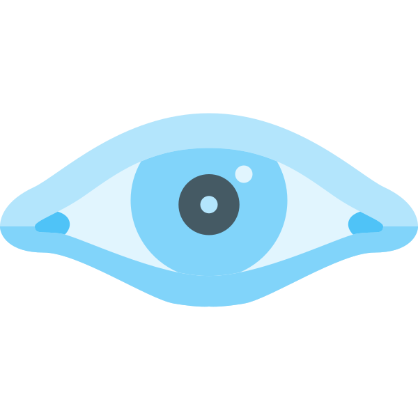

QUÉ HAGO
Mi Enfoque
Soy Ingeniero Electrónico con experiencia en instrumentación industrial, automatización y sistemas de control avanzados. Me especializo en el diseño, implementación y optimización de procesos industriales, integrando tecnología para mejorar la eficiencia, confiabilidad y seguridad operativa. Además, me apasiona la ciberseguridad y el análisis de datos, áreas en las que aplico herramientas como Wireshark, Nmap, Scapy y Python para el monitoreo de redes, detección de vulnerabilidades y análisis forense. También utilizo SQL, Excel avanzado y Power BI para transformar datos en información valiosa para la toma de decisiones.
HERRAMIENTAS
 Python
Python Wireshark
WiresharkNmap
 Scapy
Scapy Power BI
Power BI SQL
SQL Excel
ExcelGitHub